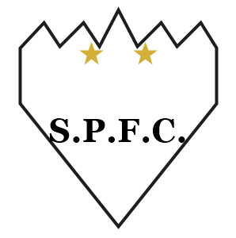
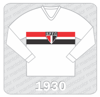
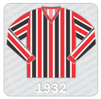
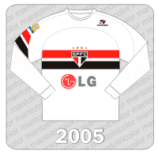
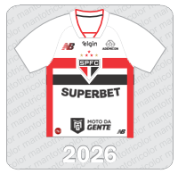
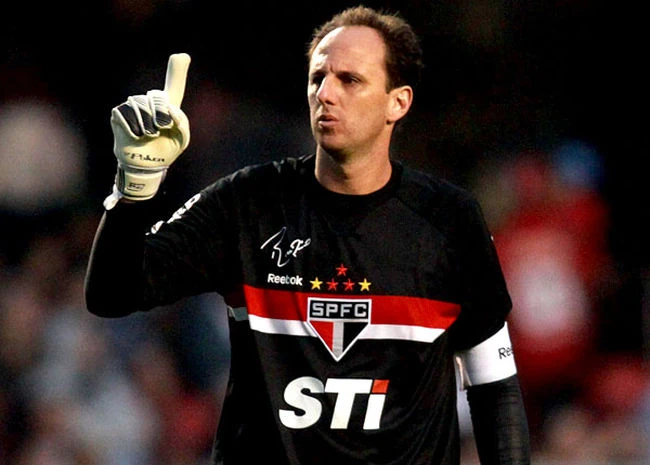
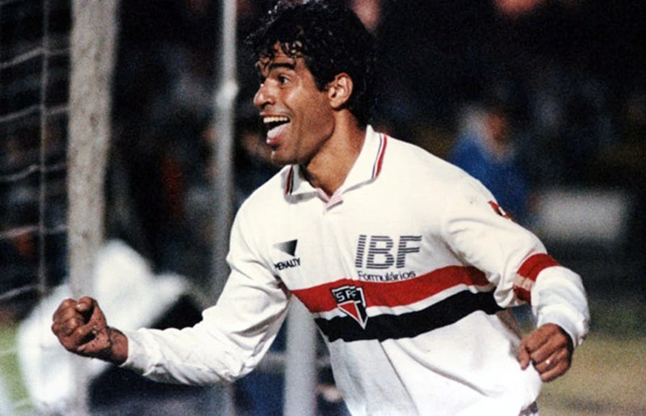
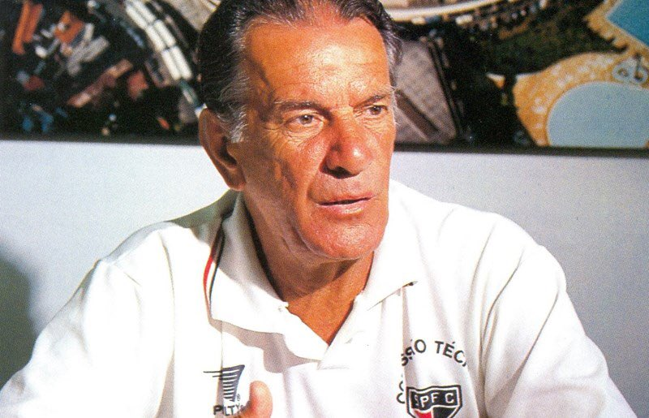
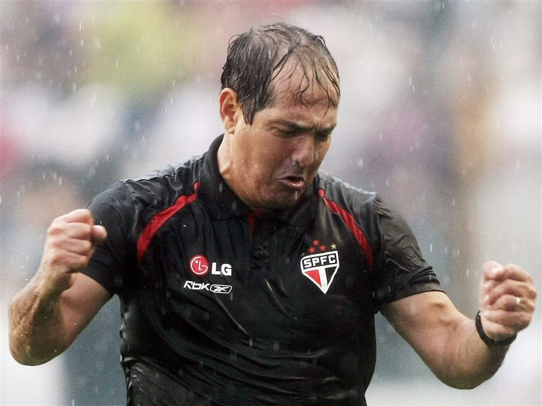

São Paulo Futebol Clube · São Paulo · Brasil · Desde 1930
TRICOLOR
O mais querido do Brasil. Tricampeão mundial, tricampeão da América, hexacampeão brasileiro — 96 anos de glória em vermelho, preto e branco.
- 3× Campeão mundial
- 3× Campeão da América
- 6× Campeão brasileiro
Desde 1930
Uma história em vermelho, preto e branco
De um clube fundado por sócios apaixonados a uma das maiores forças do futebol mundial — com as cores que nenhum torcedor esquece.
-
1930
A fundação e o primeiro escudo
Em 25 de janeiro de 1930 nasce o São Paulo Futebol Clube, da união entre o Club Athletico Paulistano e a Associação Atlética das Palmeiras. Poucos dias depois, o coração de cinco pontas é desenhado por Walter Ostrich para o concurso interno do clube.
-
1932
Nasce a camisa listrada
Em 29 de maio, contra o Santos, o Tricolor estreia o uniforme nº 2: as listras verticais em vermelho, branco e preto que se tornariam parte da alma do clube. Vitória por 4 a 0.
-
1935
O reinício
Em meio a dificuldades financeiras, o clube se reorganiza e renasce. É nesse período que o tenente José Porphyrio da Paz compõe o hino — "Salve o Tricolor Paulista" — oficializado em 1942.
-
1943
O esquadrão g-lico
Com Leônidas da Silva, o Diamante Negro, o São Paulo monta um dos times mais espetaculares do país e domina o futebol paulista, eternizando a camisa na década de 40.
-
1960
Nasce o Morumbi
O estádio Cícero Pompeu de Toledo abre as portas ainda em obras. Nos anos seguintes se tornaria o maior estádio particular do mundo.
-
1977
O primeiro Brasileiro
O Tricolor conquista o Campeonato Brasileiro pela primeira vez, decidindo o título no Maracanã, e se firma entre as maiores forças do futebol nacional.
-
1992
O mundo fica tricolor
Sob Telê Santana, o São Paulo é campeão da Libertadores e depois do mundo, vencendo o Barcelona no Japão com dois gols de Raí.
-
1993
Bicampeão de tudo
De novo Libertadores, de novo o mundo: na final contra o Milan, o Tricolor vence por 3 a 2 e eterniza uma das maiores camisas da história.
-
2005
O tri em Tóquio
Tricampeão da América e campeão mundial ao vencer o Liverpool por 1 a 0, com atuação histórica de Rogério Ceni e gol de Mineiro.
-
2006–2008
Hexa sem discussão
Com Muricy Ramalho no comando e Rogério Ceni em campo, o São Paulo é o único campeão brasileiro três vezes seguidas no formato de pontos corridos.
-
2023–2024
O ciclo recomeça
Copa do Brasil em 2023 e Supercopa do Brasil em 2024: o Tricolor volta a levantar taças e segue entre os maiores campeões do país.
“Salve o Tricolor Paulista, amado clube brasileiro. Tu és forte, tu és grande — dentre os grandes, és o primeiro.”
Ó Tricolor, clube bem amado: as tuas glórias vêm do passado.
Hino oficial · Tenente José Porphyrio da Paz · composto em 1936 · oficializado em 1942
O símbolo
O coração de cinco pontas
O emblema são-paulino nasceu dias após a fundação, em 1930, desenhado pelo estilista alemão Walter Ostrich, o "Oliver", com a colaboração de Firmiano de Morais Pinto Filho. Apresentado pela primeira vez em 9 de março de 1930, na vitória por 3 a 0 sobre o Ypiranga, sua forma única — um coração de cinco pontas — foi eleita a mais bonita do mundo pela imprensa britânica.
-
O formato
Um triângulo isósceles com o lado maior para cima, encimado por um retângulo preto com as letras SPFC em branco. No interior, a faixa branca central ladeada pelo triângulo vermelho e pelo preto.
-
As cores
Vermelho dos sócios do Paulistano, preto dos associados da AA das Palmeiras e o branco comum a ambos — as mesmas cores da bandeira paulista.
-
As estrelas
Duas douradas, em homenagem aos recordes mundiais do triplo salto de Adhemar Ferreira da Silva (1952 e 1955), e três vermelhas, pelos títulos mundiais de 1992, 1993 e 2005.

Os mantos
Camisas que entraram para a história
Do manto da fundação à camisa de Tóquio: cada tecido branco carrega uma história tricolor.
-

1930 · Uniforme nº 1
O manto da fundação
Do cinturão vermelho do Paulistano e da faixa preta da AA Palmeiras nasce a combinação das três cores.
-

1932 · Uniforme nº 2
A camisa listrada
Listras verticais vermelho, branco e preto desde o 4 a 0 sobre o Santos, em maio de 1932.
-

2005
A camisa de Tóquio
O branco do tricampeonato mundial, imortalizado com Rogério Ceni no Japão, sobre o Liverpool.
-

Hoje
O manto tricolor
O branco que a nova geração veste sob as cinco estrelas — 96 anos e contando.
A galeria
Todos os títulos
São 12 títulos internacionais oficiais — o maior número entre os clubes brasileiros — e 20 taças nacionais e internacionais de grande porte.
-
3×
Mundial de Clubes
1992 · 1993 · 2005 — o recordista brasileiro
-
3×
Copa Libertadores
1992 · 1993 · 2005
-
6×
Campeonato Brasileiro
1977 · 1986 · 1991 · 2006 · 2007 · 2008
-
3×
Copa do Brasil
1998 · 2002 · 2023
-
1×
Supercopa do Brasil
2024
-
2×
Recopa Sul-Americana
1993 · 1994
-
1×
Copa Sul-Americana
2012
-
1×
Supercopa Libertadores
1993
-
22×
Campeonato Paulista
1931 · 1943 · 1949 · 1953 · 1957 · 1970 · 1975 · 1980 · 1991 · 1992 · 1998 · 2000 · 2005 · 2021 · …
Time da fé
A torcida e a base
O velhinho de barbas brancas, o grito que faz o estádio tremer e o celeiro de craques que alimenta o Tricolor.
Santo Paulo, o vovô tricolor
O mascote eternizou-se nos cartuns do jornal A Gazeta, nos anos 1940. Chamado de "Santo Paulo" para não se confundir com o nome do clube, o simpático velhinho de barbas brancas representa o "time da fé" — o apóstolo Paulo, o padroeiro da cidade, dá nome ao clube desde a fundação em 25 de janeiro.
O grito que ecoa no MorumBIS
Arakan–Balan–Bakan
Arakan–Balan–Bakan
Tumerê–Tumerá · Macambê, bê-cam-bê-cá
Rico-réco, Rico-rá
Rá-rá-rá! São Paulo! São Paulo! São Paulo!
Made in Cotia
O centro de treinamento da base é uma das fábricas de talento mais respeitadas do Brasil. De lá saíram craques que conquistaram o mundo — e que continuam enchendo o estádio de esperança.
- Kaká
- Lucas Moura
- Casemiro
- Hernanes
- Éder Militão
- Antony
- David Neres
Recorde de público do MorumBIS: 146.082 torcedores em 1977
As lendas do Morumbi
Ídolos que vestem a história
Goleiros artilheiros, mestres táticos e craques que fizeram o mundo aplaudir o Tricolor.
-

Rogério Ceni
Goleiro · Nº 1
1.257 jogos e 131 gols. O maior goleiro-artilheiro da história e capitão de praticamente todas as conquistas.
-

Raí
Meia · Terror do Morumbi
Herói do Mundial de 1992, com dois gols na final contra o Barcelona. Gênio do período mais vitorioso.
-

Telê Santana
Técnico · O Mestre
Arquiteto da era de ouro: Libertadores e Mundiais de 1992 e 1993, com um futebol que encantou o mundo.
-

Muricy Ramalho
Técnico
O único a vencer três Campeonatos Brasileiros seguidos no formato de pontos corridos, de 2006 a 2008.
-
Leônidas da Silva
Atacante · Diamante Negro
O inventor da bicicleta. Ídolo absoluto da era de ouro dos anos 1940 e símbolo da camisa tricolor.
-
Kaká
Meia · Nº 8
Revelado em Cotia pelo Tricolor, foi eleito o melhor jogador do mundo em 2007, levando o nome de São Paulo ao planeta.
A casa
MorumBIS
Estádio Cícero Pompeu de Toledo: o maior estádio particular do Brasil e um dos templos mais imponentes do futebol mundial — onde o Tricolor joga há mais de seis décadas.
- 66.795 lugares
- 3º maior estádio do Brasil
- Maior estádio particular do país
- Inaugurado em 1960 · concluído em 1970
- Arquitetura de Vilanova Artigas
- Tombado pelo Conpresp · 2018
-
3×
Mundiais
-
3×
Libertadores
-
6×
Brasileiros
-
22×
Paulistas
O manto
Vista o tricolor
Uma história de 96 anos espera por você. Acompanhe o dia a dia, os bastidores e os próximos jogos no site oficial do clube.